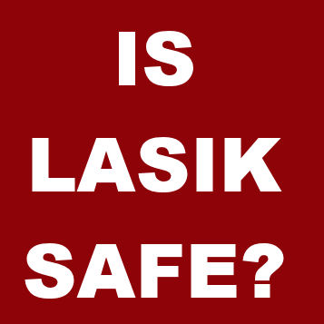

Is LASIK safe? If you want the facts, read on...
Having LASIK is playing Russian roulette with your eyes. Eye surgeons withhold information about the adverse effects of laser eye surgery. Don't fall for the marketing hype, and don't base your decision on recommendations from other patients. Get the facts for yourself. And just remember one thing -- laser eye surgery is unnecessary; there is no sound reason to risk your eyesight and the health of your eyes on an unnecessary surgery.
Dispelling the myths...
1) MYTH: Nearly everyone who has Lasik is satisfied with the outcome. FACT: A significant percentage of Lasik patients who claim to be satisfied have chronic dry eyes and poor night vision after surgery. In 2008, the Lasik industry tried to distract attention from widespread problems with Lasik, including Lasik-related suicides, by issuing a press release asserting a 95.4% Lasik satisfaction rate. But the Lasik industry never expected anyone to actually examine the science behind this claim. Well, we did. And you'll be shocked to learn what they're hiding. Read The Truth Behind Lasik Satisfaction, a smokescreen to conceal complications.
2) MYTH: Lasik is safer than contact lenses. FACT: Lasik surgeons are so desperate to sell an unnecessary, harmful surgery that they have resorted to scare tactics. They are hoping to scare people who wear contact lenses into undergoing an irreversible surgery on their only pair of eyes. Seriously, does anybody really believe that Lasik surgery is safer than contact lenses? Get the facts behind the Lasik industry's most outrageous sales tactic; read LASIK is Safer Than Contacts Myth
3) MYTH: Having Lasik surgery will save money in the long run. FACT: The exact opposite may be true. Lasik may turn out to be a very costly mistake! Read here to lean the truth, Does LASIK Save Money?
4) MYTH: Bad outcomes from LASIK are due to poor screening. FACT: Virtually every patient who suffers a bad outcome was declared a 'perfect candidate'. LASIK surgery on a healthy cornea carries significant risks regardless of screening. Moreover, there are long-term consequences in all eyes that undergo LASIK.
5) MYTH: Dry eyes after laser eye surgery is temporary. FACT: Corneal nerves, which are severed and destroyed during LASIK, are virtually absent immediately after surgery, creating a numb cornea (patients may not feel symptoms of dryness in the early post-op period). These nerves regenerate slowly and do not return to normal densities through five years after surgery -- likely never fully recovering. (Source: Patel, et al. Subbasal nerve density and corneal sensitivity after laser in situ keratomileusis: femtosecond laser vs mechanical microkeratome. Arch Ophthalmol. 2010 Nov;128(11):1413-9. Link to full text.) Furthermore, aberrant regrowth of corneal nerves may lead to disabling chronic corneal neuropathic pain.
6) MYTH: Dry eyes after LASIK is a minor annoyance and easily managed with eye drops. FACT: Dry eyes after LASIK is the most common reason for LASIK dissatisfaction. Dry eyes can be painful and debilitating, and eye drops may only help for a minute or two.
7) MYTH: Newer LASIK technologies have virtually eliminated LASIK complications. FACT: In an FDA study of LASIK completed in 2014 using the latest technologies, complications such as dry eyes and night vision problems occurred in a "significant number of patients" according to an FDA spokesperson. The "newer technology" argument is a clever marketing ploy to overcome the fear prospective patients have of undergoing an irreversible surgery on their only pair of eyes. Eye surgeons made the same argument 15 years ago, 10 years ago, 5 years ago, and they are still making it today. It's a pattern -- when problems with one technology are exposed, they blame it on old technology and move on to the next so-called upgrade or surgical variation (while abandoning their patients with problems). But eventually problems emerge with the upgrade or the next 'best thing'. And the cycle continues. It's just commonsense -- Surgically altering a healthy, normal cornea has always, and will always, lead to problems. After LASIK, the corneal surface is irregular, leading to loss of visual quality and an increase in visual aberrations, corneal nerves never return to normal densities and patterns -- exposing patients to risk of chronic dry eyes and pain, the flap never heals, and biomechanical strength of the cornea is permanently and significantly reduced. Not to mention other universal adverse effects.
Read report filed with the FDA by a patient who had LASIK in 2014, presumably with the latest techology. Read here
8. MYTH: Lasik is safe because my friends who've had Lasik all recommend it.
FACT: A large percentage of people who've had LASIK will admit to some degree of "side effects" if you ask the right questions.
Have you asked your friends who've had LASIK if they have any problems with dry eyes, or if they see halos and starbursts at night, or have vision that is not as crisp as it was before surgery with glasses? A Consumer Reports survey found that 53% of laser eye surgery patients experience at least one side effect and 22% still have problems six months after surgery. This is consistent with data from 12 LASIK clinical trials, which show that approximately 20 percent of patients report dry eyes, glare, halos, and night driving problems six months after LASIK. In the latest FDA study of LASIK completed in 2014 using the latest technology, up to 45 percent of patients who had no visual symptoms before surgery reported at least one visual symptom (double vision/ghosting, starbursts, glare, and halos) at three months after surgery, and up to 30 percent of patients with no symptoms of dry eyes before LASIK reported dry eye symptoms at three months after their surgery. Many patients who are initially satisfied become dissatisfied over time as problems emerge or they realize that "side effects" are permanent. Dr. Edward Boshnick, a Florida optometrist who specializes in treating vision problems after laser eye surgery estimates that roughly 80 percent of the failed LASIK cases that he treats were initially satisfied with their surgery but developed vision problems several years later.
9. MYTH: If I go to one of the best surgeons, I shouldn't be concerned about having a problem.
FACT: Even if you go to the so-called best surgeon -- the most famous, the most recommended, the most experienced, the one who wrote the book, the one who is a LASIK "pioneer", the one who did the clinical trials, the one who "fixes the mistakes" of other surgeons, the one who is board certified, the one who is "internationally known", the one with a patent, the one who does LASIK on famous athletes or actors, the one that other LASIK surgeons go to for LASIK (ha!), the one who's never had a complication (no such thing), the one who trains other LASIK surgeons, the one who was "chosen" to do this or that, the one who is involved in "LASIK research", the one who won this honor or that award, the one who is an "adjunct professor" at fill-in-the-blank", the one who trained under some hot-shot LASIK surgeon, the one who lectures or presents at national meetings, the one who is a consultant, the one who uses the "latest technology" -- you'll still face significant risk to your eyes. Virtually all LASIK surgeons claim to be the best. It's a marketing ploy. So-called 'best' surgeons have their fair share of bad outcomes. What's more, leading LASIK surgeons may be overly confident, which is not a desirable trait when it comes to unnecessary eye surgery. We hear from patients who suffered bad results from corporate high-volume LASIK mills and from prominent world-renowned LASIK surgeons.
Latest FDA LASIK Study Finds Significant Problems
Preliminary results of the FDA's LASIK Quality of Life Study have been published on the FDA website. On October 19, 2014, FDA official, Malvina Eydelman, M.D., summarized the study findings saying, "Given the large number of patients undergoing LASIK annually, dissatisfaction and disabling symptoms may occur in a significant number of patients." Findings from the study include:
• 46% of subjects who were symptom-free before LASIK reported visual symptoms (halos, starbursts, glare, and ghosting) after LASIK.
• Visual symptoms were "very" or "extremely" bothersome in up to 5.1% of subjects at 3 months after surgery.
• Up to 1.9% of subjects experienced difficulty performing activities due to visual symptoms.
• Up to 28% of subjects with no symptoms of dry eyes before LASIK developed dry eye symptoms after LASIK.
• Up to 4% of subjects were dissatisfied with their vision.
Source: FDA slide presentation. Read more on LasikNewsWire.
Consumer Reports Survey of Laser Eye Surgery Patients - 53% Experience Side Effects
A Consumer Reports survey of 793 adults who had laser vision-correction surgery found 53% experience at least one side effect and 22% still have problems six months after surgery. More than half of the people who have laser vision-correction surgery still need to wear glasses at least some of the time. Twelve percent of the patients had to repeat the procedure. And nearly a quarter (24 percent) of not highly satisfied respondents said they regretted not learning more from people who had laser eye surgery before them.
Source: Consumer Reports (Click "What Consumers Say")
Aren't Most Patients Satisfied After Laser Eye Surgery?
Most patients are satisfied... initially. One reason for the initial high rate of satisfaction is that patients are told that "side effects" (dry eyes, starbursts, halos, and double vision/ghost images) are temporary. So, although patients may be experiencing problems -- such as dry eyes and night vision difficulties -- they are happy with the initial visual outcome. Regression, persistent dry eyes and night vision problems, delayed complications, and reading vision problems lead to an increase in dissatisfaction over time.
Cognitive dissonance is another reason for the initial high rate of satisfaction after LASIK. Patients who experience a less than optimal outcome have an internal conflict to resolve. Denying the problems is their way of coping. It's easier psychologically than admitting to having made a terrible mistake that resulted in potentially permanent damage to their eyes, and it protects their pride. Who likes to admit their mistakes?
Another reason for reported satisfaction with LASIK is known as the Hawthorne effect, which states that patients may rate their level of satisfaction highly to please the surgeon.
Learn more about the LASIK satisfaction smoke screen and the hoax "95% of patients are satisfied". Read The Truth Behind LASIK Satisfaction and Patient Satisfaction After LASIK
An additional reason for the initial high rate of satisfaction with LASIK is simple: When you're overdue for an eye exam, and you finally see your eye doctor and put on your new glasses, suddenly the world is so much clearer! When patients are comtemplating undergoing LASIK, they may be due for an eye exam and new eyeglasses or contact lenses (virtually no one decides to get LASIK shortly after paying for a new pair of glasses). Because of this, they may not be seeing as clearly with their old eyeglasses or contact lenses prescription. So, when they have LASIK, it's as if they updated their glasses and are suddenly seeing better than before. The difference is, with eyeglasses you can always get a new pair when your vision changes; but after LASIK, the outdated prescription is permanently lasered onto your corneas.
Top Ten Reasons Not to Have LASIK
1. LASIK causes dry eye
Dry eye is the most common complication of LASIK. Corneal nerves that are responsible for tear production are severed when the flap is cut. Medical studies have shown that these nerves never return to normal densities and patterns. Symptoms of dry eye include pain, burning, foreign body sensation, scratchiness, soreness and eyelid sticking to the eyeball. The FDA website warns that LASIK-induced dry eye may be permanent. Approximately 20% of patients in FDA clinical trials experienced "worse" or "significantly worse" dry eyes at six months after LASIK.(1) In 2014, an FDA study found that up to 30% of patients with no symptoms of dry eyes before LASIK reported dry eye symptoms at three months after LASIK.
2. LASIK results in loss of visual quality
LASIK patients have more difficulty seeing detail in dim light (loss of contrast sensitivity) and experience an increase in visual symptoms at night (halos, starbursts, glare, double vision/ghosting, ). A published review of data for FDA-approved lasers found that six months after LASIK, 17.5 percent of patients report halos, 19.7 percent report glare (starbursts), 19.3 percent report night-driving problems and 21 percent complain of eye dryness.(1) The FDA website warns that patients with large pupils may suffer from debilitating visual symptoms at night. In 2014, an FDA study found that up to 45% of patients who had no visual symptoms before surgery, reported at least one visual symptom at three months after surgery.
3. The cornea is incapable of complete healing after LASIK
The flap never heals. Researchers found that the tensile strength of the LASIK flap is only 2.4% of normal cornea.(2) LASIK flaps can be surgically lifted or accidentally dislodged for the remainder of a patient’s life. The FDA website warns that patients who participate in contact sports are not good candidates for LASIK.
LASIK permanently weakens the cornea. Collagen bands of the cornea provide its form and strength. LASIK severs these collagen bands and thins the cornea.(3) The thinner, weaker post-LASIK cornea is more susceptible to forward bulging due to normal intraocular pressure, which may progress to a condition known as keratectasia and corneal failure, requiring corneal transplant.
Universal Long-term Consequences of LASIK
Laser eye surgery alters corneal thickness and biomechanical properties. Consequently, the measurement of intraocular pressure (IOP) is inaccurate after LASIK. IOP measurement is critical in the diagnosis of glaucoma. Patients who have had LASIK may lose vision due to undiagnosed glaucoma.
Everyone will develop cataracts, including patients who have had laser eye surgery. Cataract surgery involves removal of the natural lens inside the eye and implantation of an artifical intraocular lens (IOL). The altered corneal shape after laser eye surgery results in inaccurate measurement of the intraocular lens power for cataract surgery. This means that patients who have laser eye surgery and later develop cataracts may be right back in glasses after cataract surgery -- or worse, subjected to the inherent risks of multiple surgeries. The FDA says eye surgeons should provide their patients with an eye measurement card (k-card) for future cataract surgery; however, virtually no surgeons provide the card because doing so would alert patients to future consequences of laser eye surgery. Morever, virtually all types of eye surgery carry risk of cataracts. Lasik critics suspect that Lasik hastens onset of cataracts. A 2015 study, which found that Lasik patients present for cataract surgery 10 - 15 years earlier, seems to support this idea.
Corneal nerves responsible for tear production are severed and destroyed during LASIK. Microscopic examinations of post-LASIK corneas show the reduction in corneal nerves after LASIK persists for years. No study at any time point has found that corneal nerves fully recover after LASIK to normal densities and patterns.
Former FDA Insider Turned LASIK Whistleblower
In 2009 Morris Waxler, PhD, a former FDA official who played a key role in FDA-approval of LASIK lasers, began speaking out about LASIK risks after learning of widespread problems and long-term consequences of the procedure. Waxler reviewed the data from LASIK clinical trials, including newer laser technologies, and found that the true incidence of complications -- buried within the data -- approximated 20 percent, which failed to meet safety requirements for approval. In early 2011, Waxler filed a citizen's petition with the FDA requesting that the agency withdraw approval for all LASIK devices and issue a Public Health Advisory with a voluntary recall of LASIK devices.
Medical Studies Prove Laser Eye Surgery is Inherently Harmful - All Eyes are Damaged
Occasionally the best nuggets of information are found buried within the body of medical literature. Most medical journal articles are not free to the public (although a short abstract is often available). For that reason, eye surgeons don't expect prospective patients to uncover the evidence showing that laser eye surgery is harmful. When doing research, it's always best to pay for the full text of the article, as biased eye surgeons are notorious for writing misleading and/or deceptive conclusions.
All eyes are permanently damaged after laser eye surgery.
Researchers at Emory University found permanent pathologic changes in all post-LASIK corneas examined, including undulation of Bowman's layer, spatial separation of the LASIK flap from the stromal bed, epithelial thickening over the wound margin, interface debris, and severed and severely disordered collagen fibrils. The study reveals that the healing response never completely regenerates normal corneal stroma.
Source: Pathologic findings in postmortem corneas after successful laser in situ keratomileusis
Moreover, laser eye surgery leaves the cornea in a permanently biomechanically-weakened state, which may lead to a sight-threatening condition known as corneal ectasia months or years after surgery.
LASIK flaps never heal.
A study conducted at Emory University found that the tensile strength of the corneal flap is only 2.4% of pre-operative tensile strength (28.1% at the flap margin). This publication reports that one author has lifted LASIK flaps out to 11 years after initial surgery, further attesting to long-term weakness of the LASIK flap. Reports of late flap dislocations suggest that LASIK patients are vulnerable to traumatic flap injury for life.
Excerpt from the full text: The clinical knowledge gained from the LASIK flap lift retreatment cases correlated well with the laboratory results. The tip of the Sinskey hook typically fell into the LASIK wound margin with minimal effort correlating with the gap in Bowman's layer seen histopathologically. Most of the resistance when lifting the flap occurred at the flap margin, particularly the cases >1 year after surgery and those with the wound in the corneal limbus, correlating with the area of hypercellular fibrotic stromal scarring and its greater measured tensile strength. Conversely, the resistance to lifting the flap in the central and paracentral regions of the interface wound was always minimal, correlating with the area of the hypocellular primitive stromal scarring and its lesser tensile strength. In some eyes, after the flap was lifted, the surface of the residual stromal bed in the central interface wound showed visible circular zones from previous broad area excimer laser ablation, further attesting to the minimal healing described pathologically in the central and paracentral LASIK bed. This study shows that the primary structural reason for the high cohesive tensile strength of normal corneal stroma is the collagen fibrils from interweaving corneal lamellae and the groups of bridging collagen filaments where stromal lamellae cross one another. Corneal stromal LASIK wounds were found to heal weaker than normal because these structures were not regenerated during the healing response. Moreover, the central and paracentral stromal LASIK wounds were found to heal by producing a hypocellular primitive stromal scar that is very weak in tensile strength, averaging 2.4% of normal, and displays no evidence of remodeling over time in specimens out to 6.5 years after surgery. In contrast, the more superficial, flap margin stromal LASIK wound, which is adjacent to the surface epithelium, was found to heal by producing a 10-fold stronger, hypercellular fibrotic stromal scar that reaches maximum tensile strength by approximately 3.5 years after surgery, averaging 28.1% of normal.
Corneal nerves severed or destroyed during LASIK never fully recover.
Mayo Clinic researchers found that corneal nerves do not fully recover at 3 or 5 years after LASIK. The publication below reports that at 3 years after surgery, corneal nerves remained less than 60% of the pre-LASIK densities.
Source: Corneal Reinnervation after LASIK: Prospective 3-Year Longitudinal Study
Excerpt from the full text: This investigation demonstrated that, after LASIK, nerve density in the central anterior cornea, as it appeared in confocal microscopy, recovers very slowly; the subbasal nerve layer, which we earlier noted does not recover by 1 year, did not completely recover by 3 years. The slow return of innervation is consistent with histologic studies in human eyes, although the longest postoperative times for histologic examination have been 4 months, and 20 months. Anderson et al. found a lack of corneal nerves at 3 months and a few small superficial nerves at 20 months after LASIK in two postmortem corneas. In normal corneas that have not had surgery, nerve density decreases only slightly between ages of 25 and 70, and the decreased nerve density 3 years after LASIK is unlikely to represent the normal demise of nerves in our group of patients... In summary, the corneal nerves that are lost during LASIK slowly regenerate, but do not return to preoperative densities by 3 years.

Disclaimer: The information contained on this web site is presented for the purpose of warning people about LASIK complications prior to surgery. LASIK patients experiencing problems should seek the advice of a physician.